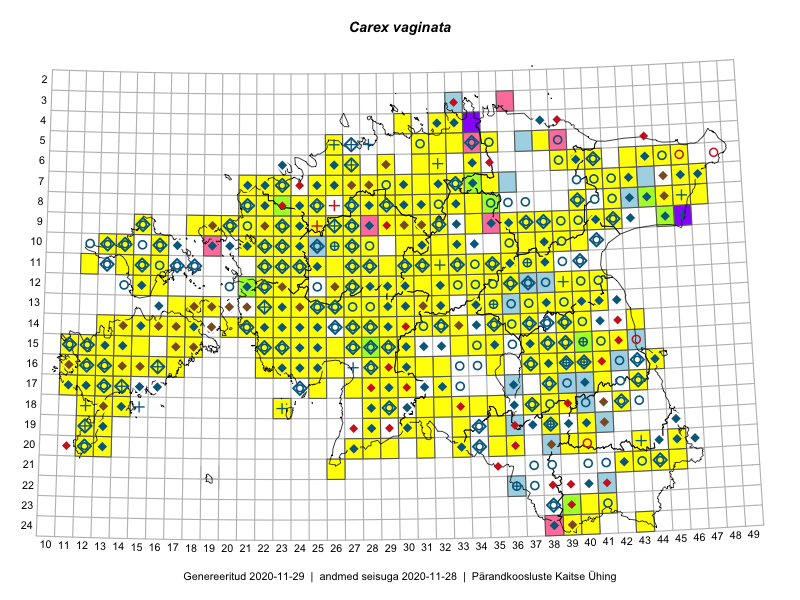

Carex vaginata
Uuendatud: 2016-12-02
Kaardile koondatud taksonid: Carex vaginata Tausch

Kaart põhineb 336 kirjel, neist vaatlusi 331 ja eksemplare 5. Taksonit on leitud 229 ruudust.
Kuvatud viited 20 esimesele andmebaasikirjele, ülejäänud PlutoFis
- Tiit Hallikma, Toomas Kukk, Indrek Tammekänd: 2015-06-09: 12-28: ala
- Peedu Saar: 2015-05-09: 13-30: ala
- Peedu Saar, Timo Luhamäe: 2015-05-10: 12-31: ala
- Thea Kull: 2015-07-07: 16-40: ala
- Peedu Saar, Liina Oja: 2015-05-21: 16-25: ala
- Toomas Kukk, Eerik Leibak: 2015-08-08: 15-18: ala
- Toomas Kukk, Thea Kull, Timo Luhamäe, Ott Luuk, Peedu Saar: 2015-06-28: 13-26: ala
- Toomas Kukk, Peedu Saar: 2014-09-25: 07-42: ala
- Toomas Kukk, Peedu Saar: 2014-09-24: 06-40: ala
- Rein Kalamees, Kersti Püssa: 2015-08-31: 04-32: ala
- Toomas Kukk, Raivo Kalle: 2015-05-12: 10-40: ala
- Ott Luuk, Jaak-Albert Metsoja: 2015-05-27: 15-23: ala
- Ott Luuk, Toivo Sepp: 2015-07-29: 09-31: ala
- Ott Luuk, Peedu Saar: 2015-07-27: 11-35: ala
- Peedu Saar: 2015-07-14: 15-38: ala
- Peedu Saar: 2015-07-15: 15-39: ala
- Ott Luuk, Peedu Saar: 2015-08-13: 24-43: ala
- Peedu Saar, Eerik Leibak: 2015-07-30: 15-42: ala
- Toomas Kukk, Peedu Saar: 2014-07-09: 08-44: ala
- Ott Luuk: 2015-06-28: 13-26: ala